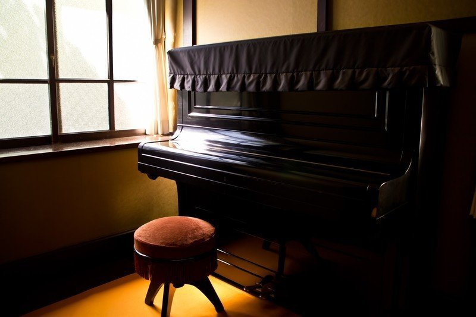

僕は幽閉されたピアニスト
いつからだろう ここでピアノを弾き始めたのは
慣れ親しんだショパンを弾く昼下がり
わずかに届く光に共鳴するみたいに
部屋の片隅で大舞台を想像する
響く音色に鳥のさえずり
「君は独りじゃない」と自信ありげな声がする
懐かしい温もりだけが頬を撫でるよ
僕は怖いもの知らずのピアニスト
激情に任せて鍵盤を叩いた黄昏時
燃える太陽が地平線に吸い込まれる
賑やかな人々の声も鳴りを潜めていく
呼び止める前にみんないなくなってしまう
僕は打ちひしがれたピアニスト
背伸びしたクラシックで寄り添う静かな夜の淵
美化された思い出の幻想
科学は進歩したのに時はなぜ前にしか進まないの
自分はここにいるのに誰が僕を操ってきたの
手を止めると訪れる静寂
音を生み続けても誰も助けてはくれない
ついに足元から水があふれ出す
逃れることのできない運命の足音が大きくなる
僕は死に損ないのピアニスト
今更になって生きたいと願う愚かなニヒリスト
次第に水位が上がっていく
やがて音は埋もれて聴こえなくなる
薄れていく現実でも忘れられない人の顔
僕は深海のピアニスト
気持ちを込めて心の奥まで届けてみせるよ
背中を抱くのは初めてkissした夜の君
僕は笑って二人の好きなメロディを奏でるんだ
指先で織りなす無音の結晶は
決められた最期に抗うための虚しい序章
目を瞑ってもイメージするのは
初めて拍手してくれた今はもういない君の姿
僕はゆっくり堕ちてゆく
君という名の深海に
僕は何度だって堕ちてゆく
見えない君のもとへ辿り着けるのなら